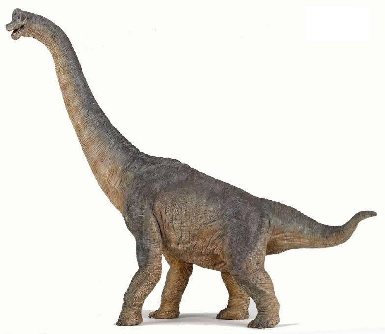
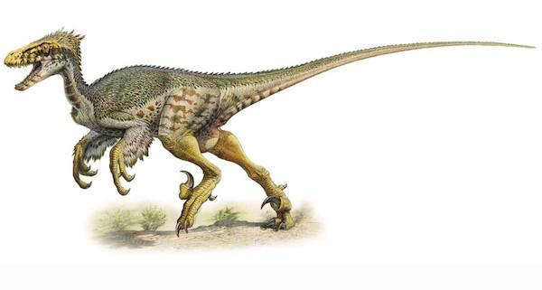

| Try matching the pictures to the correct dinosaur | |||
|---|---|---|---|
 |
|||
 |
|||
Psittacosaurus mongliensis "Psittacosaurus" (Greek psittakos = "parrot" + Greek saurus = "lizard") Size: 2 meters (7 feet) Period: Early Cretaceous (119 million to 97.5 million years ago) Place: Mongolia, China, Thailand
One of the early Ceratopians (the family of horned creatures which later evolved to include the more popular Triceratops), these "old-timers" have won a special place in the hearts of the visitors. These two-legged runners feature a square skull and a powerful (albeit toothless) "beak." The Psittacosaurus can make limited use of its four-fingered hands, especially where gathering food is concerned.
Tyrannosaurus rex "Tyrannosaurus" (Greek tyrannos = "ruler" + Greek sauros = "lizard") Also known as "T-Rex" Size: 13 meters (42 feet) Period: Late Cretaceous (68 million to 65 million years ago) Place: Colorado, Wyoming, Montana, South Dakota, New Mexico, Mongolia, China
Originally believed to be the most dangerous hunter ever to have walked the earth, the T-Rex has lived up to expectations. An enormous skull (approximately 1.5 meters, or 4.5 feet) contains a powerful set of dagger-shaped teeth, measuring 8 to 16 centimeters (3 to 6 inches) in length and 2.5 centimeters (1 inch) wide. Its extremely functional arms (90 centimeters, or about 3 feet long) can lift weights approaching 500 pounds, and the highly-developed legs allow the creature to run nearly 25 miles per hour. Add the incredibly developed senses - including binocular vision, superior hearing and a keen sense of smell - and one begins to believe all of the hype.
Brachiosaurus altithorax "Brachiosaurus" (Latin bracchium = "arm" + Greek sauros = "lizard") Size: 25 meters (82 feet) Period: Late Jurassic (156 million to 145 million years ago) Place: Colorado, Tanzania
Triceratops horridus "Triceratops" (Greek tri = "three" + Greek keratos = "horn" + Greek ops = "face") Size: 9 meters (30 feet) Period: Late Cretaceous (68 million to 65 million years ago) Place: Colorado, Wyoming, Montana, South Dakota, Alberta
The Triceratops' distinctive features were familiar to nearly all even before the opening of the park. A short horn on the nose is supplemented by two larger horns on the forehead, averaging some 3 feet in length. These massive creatures also wield one of nature's most formidable defense mechanisms, a 2.5 meter (7.5 feet) neck frill composed of a solid sheet of bone. Many of these neck frills possess barnacle-like knobs as well, adding further protection.
Gallimimus bullatus "Gallimimus" (Latin gallus = "chicken" + Greek mimos = "mimic") Size: 5 meters (17 feet) Period: Late Cretaceous (75 million to 70 million years ago) Place: Gobi Desert, Mongolia
Similar in shape to the ostrich, the Gallimimus is Jurassic Park's fastest inhabitant, able to run as fast as 50 miles an hour, thanks to long legs and a relatively light body. It features a long bill and a shovel-like lower jaw.
Parasaurolophus walkeri "Parasaur" (Greek para = "by" + Greek sauros = "lizard" + Greek lophos = "crest") Size: 9 meters (30 feet) Period: Late Cretaceous (76 million to 65 million years ago) Place: Alberta, Utah, New Mexico
Able to walk on two feet as easily as four, the duckbilled (lambeosaurine) Parasaur is distinguished by its skull crest, an elongated, curved structure longer than the entire skull. This crest contains two hollow tubes, originally believed to be a respiratory device used in similar fashion to a snorkel. However, the true purpose of the tubes turns out to be for the creation of sound. The Parasaur is able to use these tubes to communicate with its fellow herd members through the emission of low-frequency vocal resonances.
Dilophosaurus wetherill "Dilophosaur" (Greek di = "two" + Greek lophos = "crest" + Greek sauros = "lizard") Size: 6 meters (20 feet) Period: Early Jurassic (208 million to 194 million years ago) Place: Arizona
One of Jurassic Park's stranger residents, the Dilophosaurus possesses unusually long forelimbs and a disproportionately large (although surprisingly delicate) head. The truly distinguishing feature, however, is the pair of arched crests positioned on top of its head from which multi-colored, almost hypnotic cowls fan out.
Velociraptor mongoliensis "Velociraptor" (Latin velox = "swift" + Latin raptor = "robber") Size: 2 meters (7 feet) Period: Late Cretaceous and early Campanian (85 million to 80 million years ago) Place: Mongolia, China, Russia
A swift predator with long claws and sharp teeth, the "Raptor" was originally intended as dinner for the more popular Tyrannosaur. While its larger counterpart has adopted a more sedentary lifestyle, however, the flat-snouted Raptor has grabbed the limelight. With surprising smarts, disproportionately large eyes and a love of the hunt, this beast has both amazed and terrified the Park's visitors.
Compsognathus longipes "Compy" (Greek kompsos = "elegant" + Greek gnathos = "jaw") Size: 1 meter (40 inches) Period: Late Jurassic (156 million to 145 million years ago) Place: Germany, France
The smallest dinosaur in Jurassic Park has proven to be a fierce predator, thanks to a long neck, powerfully-clawed fingers, and massive upper legbones, enabling it to reach surprisingly fast speeds. Feet are also clawed, used to grasp prey.